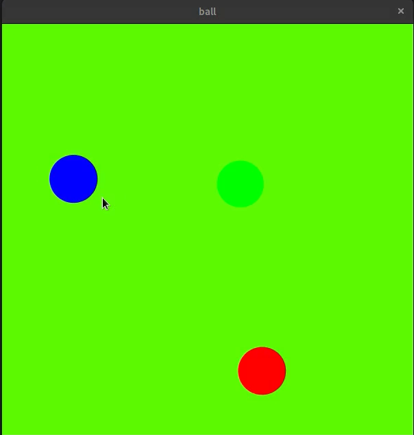
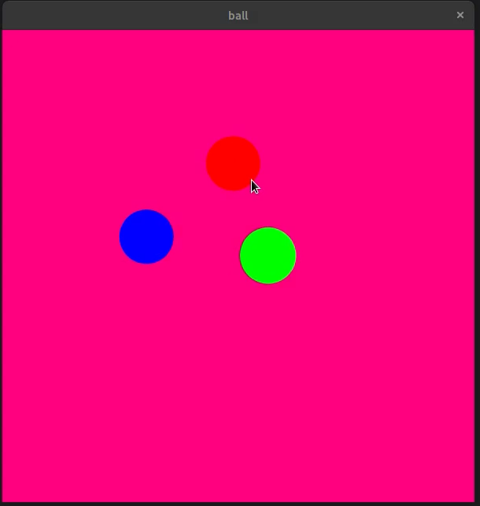
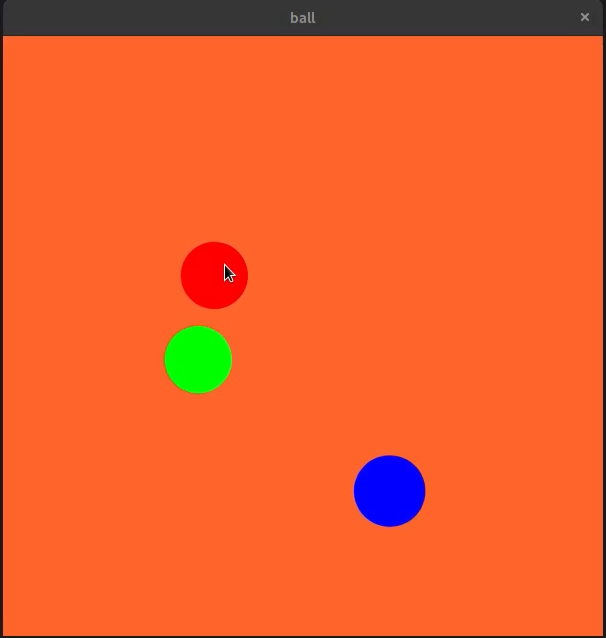

Vadim Pasinicevs
|
|
|
|
|
||
Bootcamp 2020For my first project I have created a canvas that changes colour when the user hovers over a circle. The colour change is determined on the colour of the circle that Is being hovered over. If the user if fast enough, the colours will combine. Check out the code on Github: https://github.com/vadimcity/canvas | ||
|    | ||